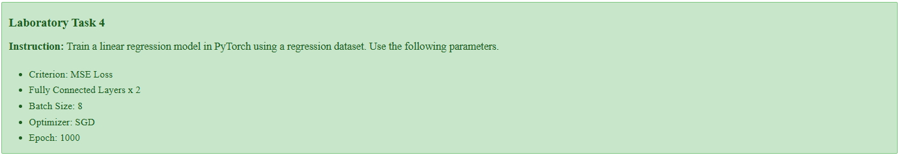

Laboratory Task 4 - Training Linear Regression Model in PyTorch#
DS Elective 4 - Deep Learning#
Name: Keith Laspoña
Year & Section: DS4A
Instruction: Train a linear regression model in PyTorch using a regression dataset. Use the following parameters.
Criterion: MSE Loss
Fully Connected Layers x 2
Batch Size: 8
Optimizer: SGD
Epoch: 1000

1. Import Libraries#
import torch
import torch.nn as nn
import numpy as np
from sklearn.datasets import load_diabetes
from sklearn.model_selection import train_test_split
from sklearn.preprocessing import StandardScaler, MinMaxScaler
from torch.utils.data import DataLoader, TensorDataset
import torch.optim as optim
2. Define Helper Functions#
def create_regression_data():
# Load dataset
X_raw, y_raw = load_diabetes(return_X_y=True)
y_raw = y_raw.reshape(-1, 1)
# Split the data into training and testing sets
X_train, X_test, y_train, y_test = train_test_split(X_raw, y_raw, test_size=0.2, random_state=42)
# Standardize features
scaler_X = StandardScaler()
X_train = scaler_X.fit_transform(X_train)
X_test = scaler_X.transform(X_test)
# Scale the target variable (y) to be between 0 and 1
scaler_y = MinMaxScaler()
y_train = scaler_y.fit_transform(y_train)
y_test = scaler_y.transform(y_test)
# Convert to PyTorch
X_train_tensor = torch.from_numpy(X_train).float()
y_train_tensor = torch.from_numpy(y_train).float()
X_test_tensor = torch.from_numpy(X_test).float()
y_test_tensor = torch.from_numpy(y_test).float()
return X_train_tensor, y_train_tensor, X_test_tensor, y_test_tensor, scaler_X, scaler_y, X_raw.shape[1]
3. Define Linear Regression Model#
model = nn.Sequential(
nn.Linear(10, 64), # First fully connected layer (input size 10, output size 64)
nn.ReLU(), # Non-linear activation function
nn.Linear(64, 1) # Second fully connected layer (input size 64, output size 1)
)
4. Define Training Parameters#
# Criterion: MSE Loss
criterion = nn.MSELoss()
# Optimizer: SGD
optimizer = torch.optim.SGD(model.parameters(), lr=0.001)
epochs = 1000
batch_size = 8
5. Prepare Data#
# Get training and testing data
X_train, y_train, X_test, y_test, scaler_X, scaler_y, input_features = create_regression_data()
# Create DataLoader
train_dataset = TensorDataset(X_train, y_train)
train_dataloader = DataLoader(train_dataset, batch_size=batch_size, shuffle=True)
6. Training Loop#
for epoch in range(epochs):
for batch_X, batch_y in train_dataloader:
# Forward pass
outputs = model(batch_X)
# Compute loss
loss = criterion(outputs, batch_y)
# Zero gradients, perform a backward pass, and update the weights.
optimizer.zero_grad()
loss.backward()
optimizer.step()
# Print loss every 100 epochs
if (epoch + 1) % 100 == 0:
print(f'Epoch [{epoch+1}/{epochs}], Training Loss: {loss.item():.4f}')
print("\nTraining finished!")
Epoch [100/1000], Training Loss: 0.0002
Epoch [200/1000], Training Loss: 0.0018
Epoch [300/1000], Training Loss: 0.0012
Epoch [400/1000], Training Loss: 0.0275
Epoch [500/1000], Training Loss: 0.1258
Epoch [600/1000], Training Loss: 0.0209
Epoch [700/1000], Training Loss: 0.0214
Epoch [800/1000], Training Loss: 0.0489
Epoch [900/1000], Training Loss: 0.0003
Epoch [1000/1000], Training Loss: 0.1054
Training finished!
7. Evaluate Final Model#
with torch.no_grad():
test_predictions_scaled = model(X_test)
test_loss = criterion(test_predictions_scaled, y_test)
# Convert scaled predictions
test_predictions_original = scaler_y.inverse_transform(test_predictions_scaled.numpy())
print("\n--- Model Evaluation ---")
print(f"Final Test Loss (on scaled 0-1 data): {test_loss.item():.4f}")
new_X = np.random.rand(5, input_features)
new_X_scaled = scaler_X.transform(new_X)
new_X_tensor = torch.from_numpy(new_X_scaled).float()
with torch.no_grad():
predictions_scaled = model(new_X_tensor)
predictions_original = scaler_y.inverse_transform(predictions_scaled.numpy())
print(f"\nNew data points (first 5 features):\n{new_X[:, :5].round(2)}")
print(f"Model predictions (original scale):\n{predictions_original.flatten().round(2)}")
--- Model Evaluation ---
Final Test Loss (on scaled 0-1 data): 0.0251
New data points (first 5 features):
[[0.49 0.68 0.71 0.83 0.33]
[0.45 0.4 0.2 0.47 0.78]
[0.77 0.16 0.83 0.26 0.58]
[0.35 0.14 0.39 0.07 1. ]
[0.94 0.97 0.06 0.43 0.07]]
Model predictions (original scale):
[1529.43 282.29 991.9 1048.02 1199.07]
Conclusion#
This notebook defines a two-layer neural network using PyTorch to predict diabetes progression. A key feature of the code is its preprocessing. The results show this was effective, as the training loop completed with consistently low loss values, and the model achieved a final test loss of approximately 0.0251 on the scaled data. Ultimately, the code demonstrates that after training on normalized data, the model’s scaled predictions can be successfully converted back into their original, meaningful range using an inverse transform, as shown in the final evaluation output.
Key Takeaways#
Data preprocessing is critical for model performance: The activity showed that raw data is rarely used directly. Scaling features with
StandardScalerand normalizing the target variable withMinMaxScalerare essential steps to stabilize the training process and prevent issues like exploding gradients.PyTorch provides a structured workflow for model training: The entire process followed a clear pattern: defining the model architecture (
nn.Sequential), setting up the loss function (nn.MSELoss) and optimizer (torch.optim.SGD), preparing the data with DataLoader, and running the core training loop.Model outputs must be interpretable: A key lesson was that a model’s raw prediction is not always the final answer. Because the target variable was scaled, the model’s output also had to be transformed back using
scaler_y.inverse_transformto be understood in the context of the original problem.